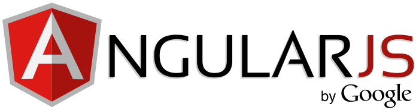
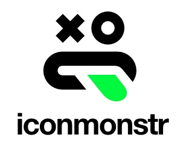
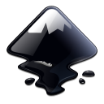

Map Credits
Code & Licensing
For those interested in the nerdy inner workings of the map, read on! This section is also a shoutout from the developer to the countless libraries, APIs, repositories, forums, and blog posts that made this map possible.
Every last drop of the code used in the map is open source, and many of the programs used to edit the data and images are as well. The source code for the project is available on GitHub for anyone interested.
Framework

First and foremost, this is an AngularJS show. Angular is Google's very powerful (and very challenging) open-source single-page application framework that can be used for super sweetness like custom directives and data binding.
Certain Angular modules were used as well, including:
For anyone interested in learning AngularJS, I highly recommend Dan Wahlin's Udemy course. Or anything by Dan for that matter. Great instructor!
The Map
The map itself is powered by:
- CartoDB on the back end (and a bit of their JS API for the front)
- LeafletJS on the front end (it's actually included in the CartoDB code)
- Leaflet GPS to handle the geolocation icon and functionality
- Leaflet History to give you the "zoom to previous position" option in the map tools.
- ESRI Leaflet tools for using ArcGIS services with Leaflet.
Styling

The appearance, styling, and layout look the way they do thanks to:
- Sass is my favorite preprocessor, and I used it to compile nearly all the CSS in the project. For those of you interested in learning Sass, I highly recommend DevTips and LevelUpTuts to get you started.
- Sass mq made writing media query breakpoints much simpler.
- Animate Sass was used for the smooth animations on the map panels' transitions. Animate Sass is based on the very-cool Animate.css library.
Workflow
These tools and applications made the workflow a lot smoother:
- There are a lot of great text editors out there, but Sublime Text 3 is my weapon of choice.
- Grunt simplifies just about every tedious web development task you can think of. From JavaScript minification to image optimization to Sass compiling, Grunt is a lifesaver!
- There are too many Grunt plugins to list here, but Browsersync deserves special mention. Basically it allows you to fire up a development website on your local network and access it from any device on that network. It even shows real-time updates and it syncs your scrolling movements on all devices. Creepy and incredibly useful at the same time!
- FileZilla is an FTP client that allowed us to upload our code and images to the live server.
Source Control
Keeping track of changes in the code is a crucial part of any project, and for this one I used Git. And, while I'm comfortable using some Git commands from the terminal, SourceTree is immensely valuable when it comes to visualizing Git actions and results.
Icons & Graphics

Most of the icons in this application came from sources much more talented at graphics production than myself, and the ones I customized were based off of them as well. Here are my main sources:
Image & Graphics Editing

These programs came in handy for various image editing and processing tasks:
- Google's Picasa for enhancing photos.
- Inkscape™ for editing and creating SVG vector graphics. If you're looking for a decent free alternative to Adobe Illustrator, look no further!
- FastStone Photo Resizer for optimizing and resizing photos (and this map has A LOT of them).